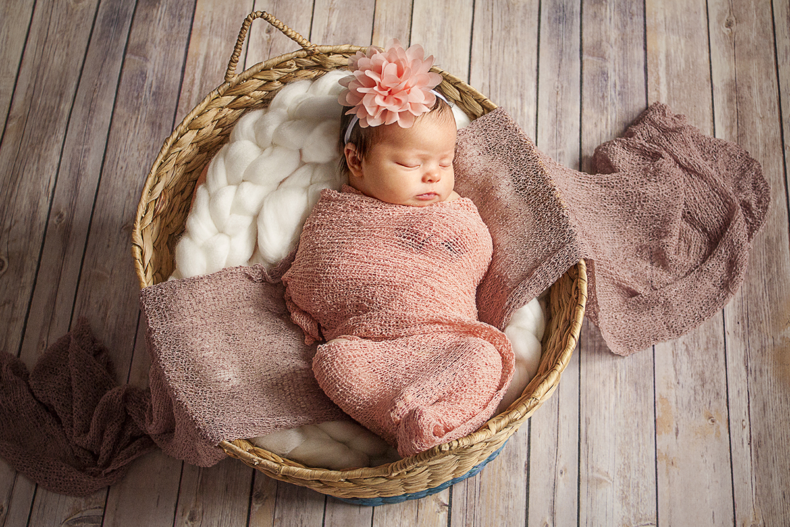
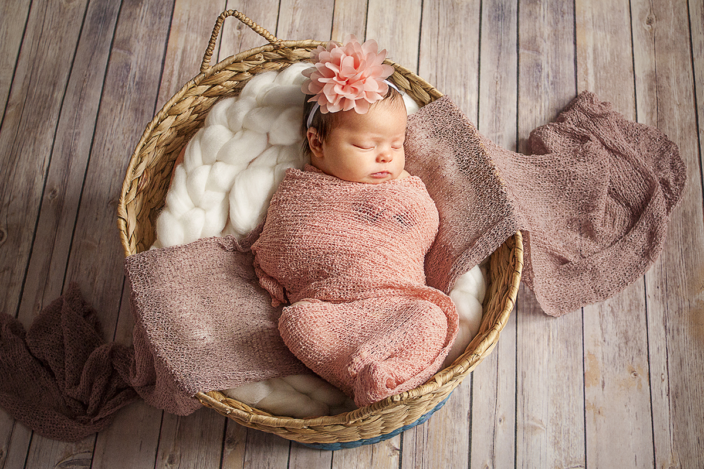
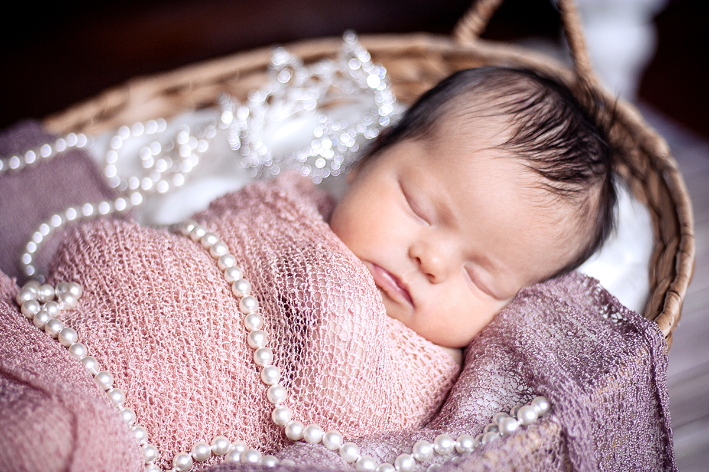
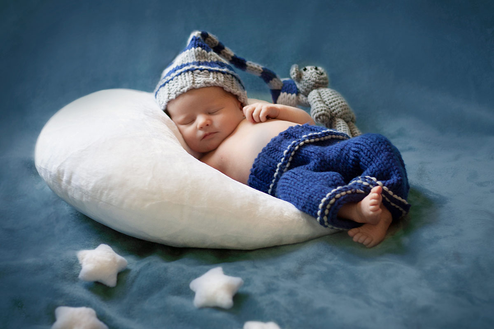
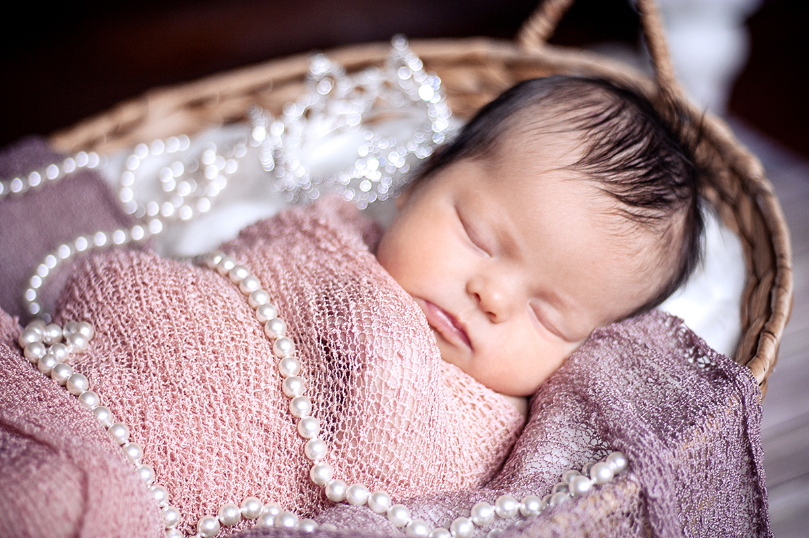
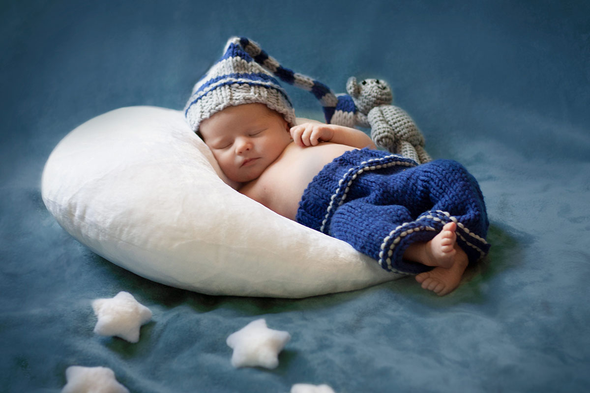

Hobbies
In my free time I really enjoy playing with my dog, cooking, reading, and creative outlets. I taught acrylic painting for a number of years, and I often take newborn photos for extra money. I have also been an avid knitter for the past 15 years...I promise I'm only 33...
Bear
This is Bear, he will be 3 years old on 12/4/21. He is a Great Pyrnees/Shepherd rescue from Tennessee and he is quite happy to finally have his own yard.

Currently Reading
Where the Crawdads Sing by Delia Owens
Paintings
Newborn Photography
 

 



Knitting
Find me on Ravelry